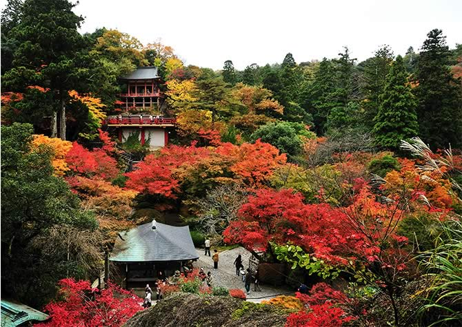
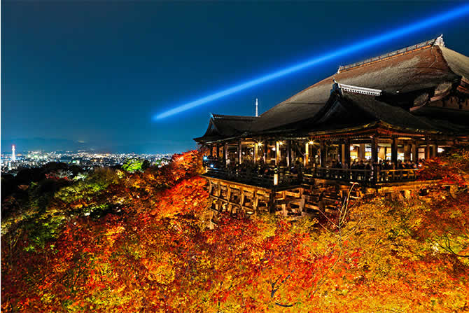

在日本人的审美情趣中，秋天的红叶与春天的樱花一样，是咏叹四季流转的风物诗。

9月开始，由最北部的北海道开始，往南至南端的九州，枫叶仿佛一头迅捷的猛兽，以一日约27公里的速度披挂着红色、黄色、褐色、绿色相间的锦衣一路驰骋，路过之处，国民不仅夹道欢迎，更如同庆典般，追随着猛兽的华美矫健身姿，因此赏红叶也形象地被称为“红叶狩”。

在日本人的审美情趣中，秋天的红叶与春天的樱花一样，是咏叹四季流转的风物诗。
9月开始，由最北部的北海道开始，往南至南端的九州，枫叶仿佛一头迅捷的猛兽，以一日约27公里的速度披挂着红色、黄色、褐色、绿色相间的锦衣一路驰骋，路过之处，国民不仅夹道欢迎，更如同庆典般，追随着猛兽的华美矫健身姿，因此赏红叶也形象地被称为“红叶狩”。
日本是一个非常注重饮食的国家，列岛上的食物可能是世界上最为兼容并蓄的，花样品种繁多，制作精细，讲究营养，体现烹饪没学。
从米其林三星餐厅到街边小店，处处都能体现出日本匠人的情怀。
没有了熙攘的人群，没有了都市的喧嚣，只有亟待疏解的身心，和着淡淡的硫磺味。
日本全境有2600多座大大小小的温泉，因而有了“温泉王国”的美誉。从海上小岛到山林秘境，处处都有可养颜、可健身或者观赏性的各类温泉。
日本独特的地理条件和悠久的历史，孕育了别具一格的日本文化，既包含传统的本土文化又包含现代流行文化，他们以一种朝圣般的心情在传承文化，传承历史，传承文明之魂，传承工匠之心。